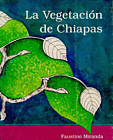
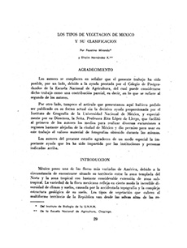
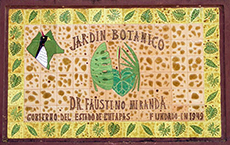

Referencias
- Dosil, M., F. J., Cremades, U. J. y Fraga V. X. A. 2001. Faustino Miranda (1905-1964). Nuevos datos relacionados con su formación botánica en España y con su contribución a la Ficología marina. Bot. Complutensis 25: 191-205.
- Dosil M., F.J. 2007. Faustino Miranda, una vida dedicada a la botánica. Instituto de Investigaciones Históricas. UMSNH, Morelia.
- Jardín Botánico de la Universidad Nacional Autónoma de México
- Palacios, E.E. 1998. En: La Vegetación de Chiapas. Faustino M. Consejo Estatal para la Cultura y las Artes de Chiapas. Gobierno del Estado de Chiapas. Tuxtla Gutiérrez, Chiapas. México. 596 p.
- Palacios-Ríos, M. 2007. Faustino Miranda un botánico español apasionado por la flora mexicana. Centro Iberoamericano de la Biodiversidad, Xalapa, Veracruz. 184 p.
- Sociedad Botánica de México
Faustino Miranda
1905 - 1965
Faustino Antonio Miranda González fue un destacado botánico, gran conocedor de la flora mexicana y experto en el estudio de las comunidades vegetales tropicales. Nació en Gijón, en la costa norte de España en 1905 y falleció en México en 1965.
Faustino Antonio fue el tercero de los hermanos, hijos de Hugo Miranda Tuya (1874-1946) y Mercedes González Forcelledo (1874-1915). Su padre fue catedrático de matemáticas en varias instituciones y autor de una decena de manuales de Aritmética y Geometría. Su madre murió bastante joven dejándolo al cuidado de sus tías paternas Bonifacia y Fortunata a los 10 años de edad. Estudió el primer año de la licenciatura en Ciencias Naturales en la Universidad de Oviedo y continuó en la Facultad de Ciencias de la Universidad Central de Madrid (1925). Realizó su doctorado en el Jardín Botánico de Madrid sobre el estudio de las algas marinas del norte de España, al finalizarlo continuó sus estudios en este campo en el Museo de Historia Natural de París.
Debido al establecimiento de la dictadura del general Francisco Franco (1892-1975) al final de la Guerra Civil española (1936-1939), Faustino y su hermano José emigraron a Francia y de ahí a México en 1939. A su llegada Faustino se incorporó como investigador el Instituto de Biología de la Universidad Nacional Autónoma de México (UNAM), donde realizó investigaciones sobre taxonomía y ecología vegetal. Descubrió varias especies nuevas en sus numerosas salidas al campo. Se casó con Enriqueta García Amaro, geógrafa con la que publicó investigaciones sobre las relaciones de la vegetación con el clima.
Invitado por el gobierno, estuvo un periodo en Chiapas (1946-1954) y por el Maestro xxxx Álvarez del Toro. Ahí estudió la vegetación del estado, de este conocimiento derivó su libro La Vegetación de Chiapas. Además fundó el Instituto Botánico del Estado de Chiapas, actualmente Departamento de Botánica del Instituto de Historia Natural. El profesor Enrique Beltrán, director del Instituto Mexicano de Recursos Naturales Renovables (IMERNAR) lo invitó a realizar estudios sobre la vegetación de la península de Yucatán, que recorrió entre 1954 y 1955.
A su regreso a la ciudad de México, contribuyó en la fundación del Jardín Botánico de la UNAM con el diseño del mismo y la creación de las primeras colecciones de plantas. Se interesó también en la etnobotánica e historia de la botánica, participó en la interpretación de los escritos del protomédico Francisco Hernández y del Códice Cruz-Badiano.
Compaginó su trabajo de campo con la docencia. Impartió clases de botánica y ecología vegetal en la Facultad de Ciencias de la UNAM, la Escuela Nacional de Graduados, la Escuela Normal Superior y la Escuela Nacional de Ciencias Biológicas del Instituto Politécnico Nacional (IPN).
Para saber más…
El Jardín Botánico de la UNAM tiene el propósito de investigar la utilización, el manejo y los valores culturales de la vegetación mexicana en general y particularmente de algunas familias de plantas como los agaves, las palmas, los cactos y las orquídeas. Además busca facilitar y fomentar la investigación botánica, colaborar en la enseñanza y divulgación de esta ciencia así como realizar acciones para la conservación de estos seres.
Aportación

La Vegetación de Chiapas,
Faustino Miranda. Sistema de información cultural

“La vegetación en Chiapas”. Faustino Miranda. Cuarta edición
Imagen: Chiapas en Contacto

Jardín Botánico “Dr. Faustino Miranda” de Tuxtla Gutiérrez, Chiapas.